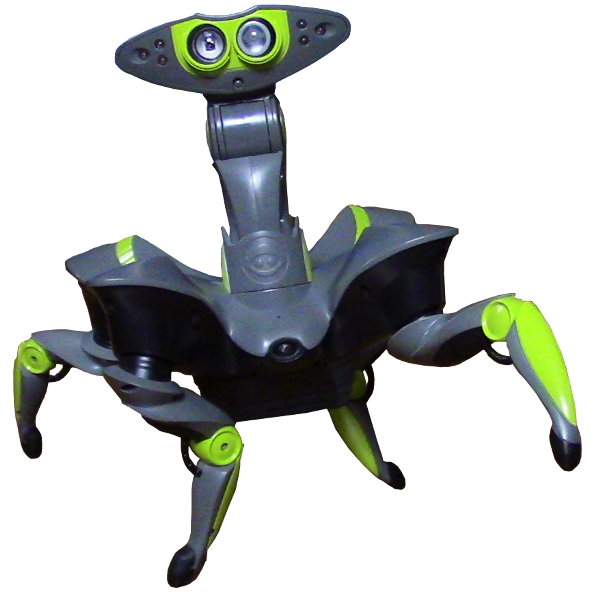
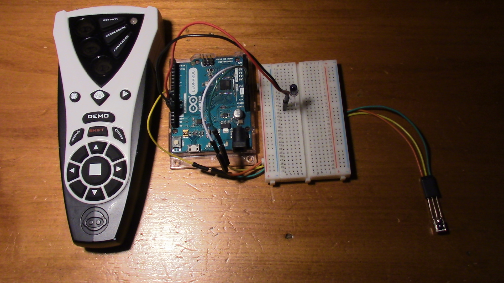
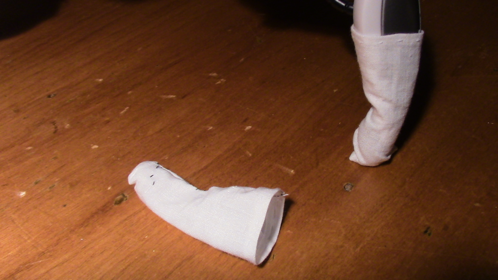

WowWee Roboquad

At CES in January 2007, WowWee robotics announced the release of the Roboquad. It was primarily designed by Mark Tilden and originally retailed for $99. It can now be purchased used on eBay for a little under $50, and can be found for substantially less at garage sales and thrift stores. When buying Roboquads on eBay, be careful not to confuse the Roboquad with the Mini Roboquad. Roboquads are often sold much cheaper if they are missing their remotes. There isn't much it can do without a remote, but it can still be controlled with an arduino.
Details
4 Leg motors
4 Leg position sensors
2 Neck Motors
Infrared Distance Sensor (10 ft range)
1 Microphone
1 Light Sensor
2.35 lbs.
Requires 4 C batteries
More information can be found on The Old Robots Web Site.
Projects Involving the Roboquad
Controlling the Roboquad with the Arduino IR library
If you don't have a remote or just want to automate the sending of commands, using the Arduino-IRremote library is the simplest solution.
Protecting the Roboquad's feet from scuffs
The Roboquad's foot-pads often become worn and scuffed when they are used on hard surfaces. It can also potentially scuff the surface it is walking on. The simplest solution is to create some sort of covering for the Quad's feet.